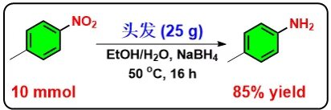

伊朗MohammadGholinejad团队2020年发表在加拿大JOC上发表了一篇文章(10.1139/cjc-2019-0444)，研究人员使用4-甲基硝基苯(0.4 mmol)作为模板底物，筛选出的最佳反应条件是：乙醇/水(NaOH，3.7 mmol)作为混合溶剂，硼氢化钠（0.8 mmol）作为还原剂，1克头发作为催化剂，50摄氏度反应12个小时，可以以99%的产率得到硝基还原产物。而其它条件不改变，反应体系不添加头发时，反应基本上不发生，这也说明头发起了作用。该反应体系具有非常好的底物兼容性，卤素，酯基，醇，酚羟基都能得到很好的兼容。除了小量的反应，该反应体系还可以放大到10 mmol规模，产率依然保持的很好，达到了85%。
